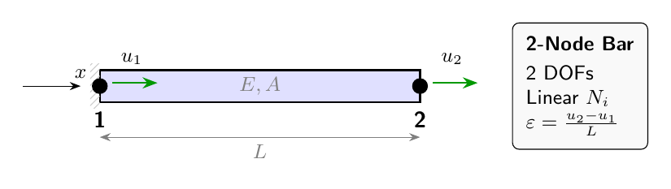
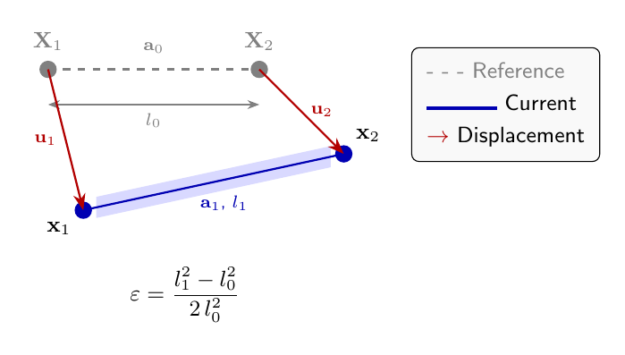

1D bar elements#
This chapter provides the mathematical foundation for 1D bar and truss elements in femlabpy. We derive the element formulations from continuum mechanics principles, covering both linear and geometrically nonlinear cases.
1. Continuum Mechanics Foundation#
1.1 Deformation gradient#
Consider a material point at position \(\mathbf{X}\) in the reference configuration that moves to \(\mathbf{x}\) in the current configuration:
The deformation gradient tensor is:
For a 1D bar aligned with \(X\), this reduces to the scalar:
1.2 Strain measures#
Engineering strain (small deformation):
Green-Lagrange strain (large deformation):
Starting from the definition based on the change in squared length:
where \(C = F^T F\) is the right Cauchy-Green deformation tensor.
For 1D:
Expanding:
Proof of objectivity: Under rigid body rotation \(\mathbf{Q}\), the deformed configuration transforms as \(\mathbf{x}' = \mathbf{Q}\mathbf{x}\). Then:
Thus \(E' = E\), proving objectivity (frame invariance). ∎
2. Linear Bar Element#
{kind=link}

Figure 3.1: Two-node linear bar element with nodal displacements \(u_1\) and \(u_2\).#
2.1 Shape functions#
For a 2-node element with local coordinate \(\xi \in [0, L]\), the linear shape functions are:
Partition of unity: \(N_1 + N_2 = 1\) for all \(\xi\) ✓
Kronecker delta: \(N_i(\xi_j) = \delta_{ij}\) ✓
The displacement field is interpolated as:
2.2 Strain-displacement relation#
The strain is the derivative of displacement:
2.3 Element stiffness derivation#
From the principle of virtual work, the internal virtual work equals:
Substituting \(\varepsilon = \mathbf{B}\mathbf{d}^e\):
Computing the integral:
Symmetry: \(\mathbf{K}^e = (\mathbf{K}^e)^T\) ✓
Positive semi-definiteness: \(\mathbf{d}^T\mathbf{K}^e\mathbf{d} = \frac{EA}{L}(u_1 - u_2)^2 \geq 0\) ✓
3. Geometrically Nonlinear Formulation#
{kind=link}

Figure 3.2: Reference and current configurations for Green-Lagrange strain derivation.#
3.1 Discrete Green-Lagrange strain#
For a bar with initial node positions \(\mathbf{X}_1, \mathbf{X}_2\) and current positions \(\mathbf{x}_1, \mathbf{x}_2\):
The discrete Green-Lagrange strain is:
Linearization: For small displacements, \(L_1 \approx L_0 + \delta L\):
recovering the engineering strain.
3.2 Second Piola-Kirchhoff stress#
The work-conjugate stress to Green-Lagrange strain is the Second Piola-Kirchhoff stress:
For linear elasticity: \(S = E \cdot \mathcal{E}\) (where \(\mathcal{E}\) is Young’s modulus).
The axial force in the reference configuration is:
3.3 Virtual work and internal force#
The variation of Green-Lagrange strain:
Since \(\delta\mathbf{a}_1 = \delta\mathbf{u}_2 - \delta\mathbf{u}_1\):
The internal virtual work:
This gives the internal force vector:
3.4 Tangent stiffness matrix#
The tangent stiffness is:
Using the product rule on \(\mathbf{q}^e = \frac{N}{L_0}[-\mathbf{a}_1; \mathbf{a}_1]\):
Material stiffness \(\mathbf{K}_m\):
Therefore:
Geometric stiffness \(\mathbf{K}_g\):
Therefore:
Total tangent:
4. Mass Matrix#
For dynamic analysis, we require the mass matrix relating nodal accelerations to inertial forces.
4.1 Consistent mass matrix#
The kinetic energy of a bar element is:
Interpolating \(\dot{u} = \mathbf{N}\dot{\mathbf{d}}^e\):
Computing the integral:
Using \(N_1 = 1 - \frac{x}{L}\) and \(N_2 = \frac{x}{L}\):
Proof of \(\int_0^L N_1^2 dx = L/3\):
Therefore the consistent mass matrix is:
4.2 Lumped mass matrix#
The lumped mass matrix concentrates mass at the nodes:
Conservation property: Both formulations preserve total mass:
Wait—the consistent matrix does not preserve total mass per DOF. However, the sum of all entries equals \(\rho A L\) in both cases:
5. Transformation to Global Coordinates#
For 2D/3D trusses, the local stiffness must be transformed to global coordinates.
5.1 Rotation matrix#
Let \(\mathbf{e}\) be the unit vector along the bar from node 1 to node 2:
In 2D, \(\mathbf{e} = [\cos\theta, \sin\theta]^T\) where \(\theta\) is the angle with the global \(x\)-axis.
The transformation matrix \(\mathbf{T}\) relates local DOFs to global DOFs:
For 2D:
5.2 Stiffness transformation#
The global stiffness is obtained via congruent transformation:
Proof of symmetry preservation: If \(\mathbf{K}^{local}\) is symmetric:
6. Implementation Reference#
Element force: qebar#
import numpy as np
def qebar(Xe0, Xe1, Ge):
"""Internal force vector for geometrically nonlinear bar."""
a0 = (Xe0[1] - Xe0[0]).reshape(-1, 1)
L0 = float(np.linalg.norm(a0))
a1 = (Xe1[1] - Xe1[0]).reshape(-1, 1)
L1 = float(np.linalg.norm(a1))
A, E = Ge[0], Ge[1]
# Green-Lagrange strain
strain = 0.5 * (L1**2 - L0**2) / L0**2
stress = E * strain
# Internal force vector
qe = (A * stress / L0) * np.vstack([-a1, a1])
return qe, stress, strain
Tangent stiffness: kebar#
def kebar(Xe0, Xe1, Ge):
"""Tangent stiffness for geometrically nonlinear bar."""
a0 = (Xe0[1] - Xe0[0]).reshape(-1, 1)
L0 = float(np.linalg.norm(a0))
a1 = (Xe1[1] - Xe1[0]).reshape(-1, 1)
A, E = Ge[0], Ge[1]
strain = 0.5 * (np.linalg.norm(a1)**2 - L0**2) / L0**2
N = A * E * strain
I = np.eye(a0.shape[0])
K_m = (E * A / L0**3) * np.block([
[ a1 @ a1.T, -a1 @ a1.T],
[-a1 @ a1.T, a1 @ a1.T]
])
K_g = (N / L0) * np.block([
[ I, -I],
[-I, I]
])
return K_m + K_g